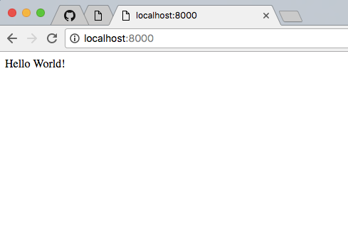
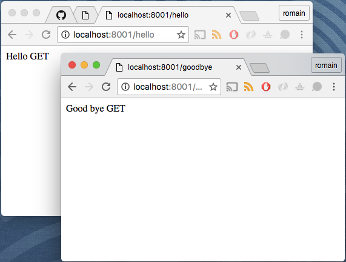
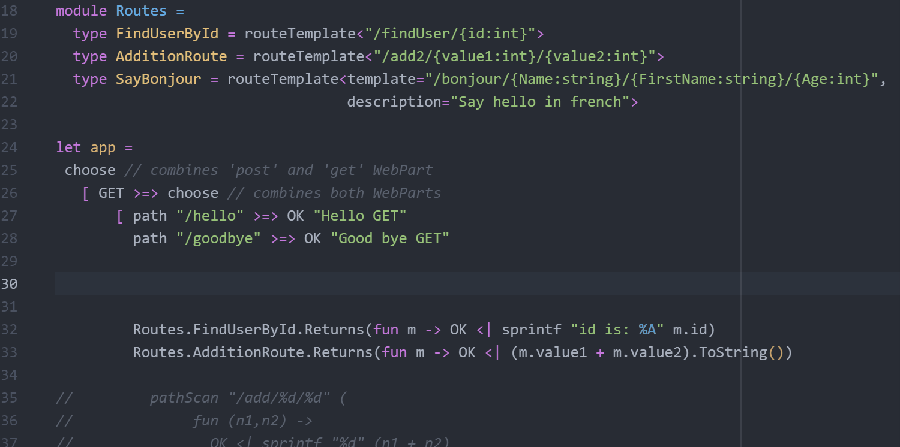
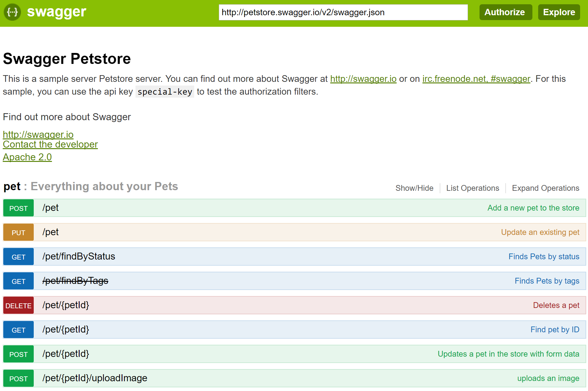
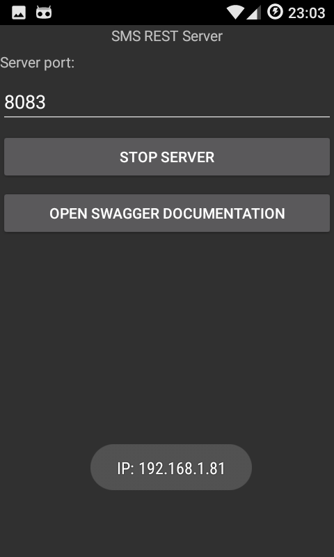
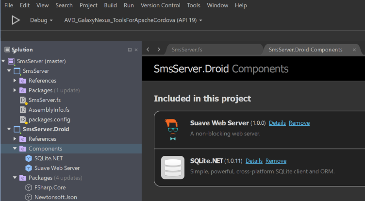

from Suave
from Suave
from Suave
Full name: index.config
type IPAddress =
new : newAddress:int64 -> IPAddress + 2 overloads
member Address : int64 with get, set
member AddressFamily : AddressFamily
member Equals : comparand:obj -> bool
member GetAddressBytes : unit -> byte[]
member GetHashCode : unit -> int
member IsIPv6LinkLocal : bool
member IsIPv6Multicast : bool
member IsIPv6SiteLocal : bool
member IsIPv6Teredo : bool
...
Full name: System.Net.IPAddress
--------------------
IPAddress(newAddress: int64) : unit
IPAddress(address: byte []) : unit
IPAddress(address: byte [], scopeid: int64) : unit
from Microsoft.FSharp.Core
Full name: index.app
Full name: Index.app
Full name: Suave.Filters.GET
Full name: Suave.WebPart.choose
Full name: Suave.Filters.path
Full name: Suave.Successful.OK
Full name: Suave.Filters.pathScan
Full name: Microsoft.FSharp.Core.ExtraTopLevelOperators.sprintf
Full name: Index.analyse
type PrintfFormat<'Printer,'State,'Residue,'Result> =
new : value:string -> PrintfFormat<'Printer,'State,'Residue,'Result>
member Value : string
Full name: Microsoft.FSharp.Core.PrintfFormat<_,_,_,_>
--------------------
type PrintfFormat<'Printer,'State,'Residue,'Result,'Tuple> =
inherit PrintfFormat<'Printer,'State,'Residue,'Result>
new : value:string -> PrintfFormat<'Printer,'State,'Residue,'Result,'Tuple>
Full name: Microsoft.FSharp.Core.PrintfFormat<_,_,_,_,_>
--------------------
new : value:string -> PrintfFormat<'Printer,'State,'Residue,'Result>
--------------------
new : value:string -> PrintfFormat<'Printer,'State,'Residue,'Result,'Tuple>
Full name: Microsoft.FSharp.Core.Operators.typeof
from Microsoft.FSharp.Collections
Full name: Microsoft.FSharp.Collections.Seq.map
Full name: Microsoft.FSharp.Collections.Seq.toList
Full name: Index.log1
Full name: Index.log2
Full name: Index.pathTemplate
Full name: Microsoft.FSharp.Core.unit
Full name: Microsoft.FSharp.Core.Operators.failwith
val int : value:'T -> int (requires member op_Explicit)
Full name: Microsoft.FSharp.Core.Operators.int
--------------------
type int = int32
Full name: Microsoft.FSharp.Core.int
--------------------
type int<'Measure> = int
Full name: Microsoft.FSharp.Core.int<_>
Full name: Index.now1
module WebPart
from Suave
--------------------
type WebPart = WebPart<HttpContext>
Full name: Suave.Http.WebPart
--------------------
type WebPart<'a> = 'a -> Async<'a option>
Full name: Suave.WebPart.WebPart<_>
module HttpContext
from Suave.Http
--------------------
type HttpContext =
{request: HttpRequest;
runtime: HttpRuntime;
connection: Connection;
userState: Map<string,obj>;
response: HttpResult;}
member clientIp : trustProxy:bool -> sources:string list -> IPAddress
member clientPort : trustProxy:bool -> sources:string list -> Port
member clientProto : trustProxy:bool -> sources:string list -> string
member clientIpTrustProxy : IPAddress
member clientPortTrustProxy : Port
member clientProtoTrustProxy : string
member isLocal : bool
static member clientIp_ : Property<HttpContext,IPAddress>
static member clientPort_ : Property<HttpContext,Port>
static member clientProto_ : Property<HttpContext,string>
static member connection_ : Property<HttpContext,Connection>
static member isLocal_ : Property<HttpContext,bool>
static member request_ : Property<HttpContext,HttpRequest>
static member response_ : Property<HttpContext,HttpResult>
static member runtime_ : Property<HttpContext,HttpRuntime>
static member userState_ : Property<HttpContext,Map<string,obj>>
Full name: Suave.Http.HttpContext
Full name: Microsoft.FSharp.Core.ExtraTopLevelOperators.async
type DateTime =
struct
new : ticks:int64 -> DateTime + 10 overloads
member Add : value:TimeSpan -> DateTime
member AddDays : value:float -> DateTime
member AddHours : value:float -> DateTime
member AddMilliseconds : value:float -> DateTime
member AddMinutes : value:float -> DateTime
member AddMonths : months:int -> DateTime
member AddSeconds : value:float -> DateTime
member AddTicks : value:int64 -> DateTime
member AddYears : value:int -> DateTime
...
end
Full name: System.DateTime
--------------------
DateTime()
(+0 other overloads)
DateTime(ticks: int64) : unit
(+0 other overloads)
DateTime(ticks: int64, kind: DateTimeKind) : unit
(+0 other overloads)
DateTime(year: int, month: int, day: int) : unit
(+0 other overloads)
DateTime(year: int, month: int, day: int, calendar: Globalization.Calendar) : unit
(+0 other overloads)
DateTime(year: int, month: int, day: int, hour: int, minute: int, second: int) : unit
(+0 other overloads)
DateTime(year: int, month: int, day: int, hour: int, minute: int, second: int, kind: DateTimeKind) : unit
(+0 other overloads)
DateTime(year: int, month: int, day: int, hour: int, minute: int, second: int, calendar: Globalization.Calendar) : unit
(+0 other overloads)
DateTime(year: int, month: int, day: int, hour: int, minute: int, second: int, millisecond: int) : unit
(+0 other overloads)
DateTime(year: int, month: int, day: int, hour: int, minute: int, second: int, millisecond: int, kind: DateTimeKind) : unit
(+0 other overloads)
DateTime.ToString(provider: IFormatProvider) : string
DateTime.ToString(format: string) : string
DateTime.ToString(format: string, provider: IFormatProvider) : string
Full name: Index.main
from Suave.Swagger
from Suave.Swagger
module Swagger
from Suave.Swagger
--------------------
namespace Suave.Swagger
Full name: Index.now2
Full name: Suave.Swagger.Rest.MODEL
Full name: Index.api1
Full name: Suave.Swagger.Swagger.swagger
Full name: Suave.Swagger.FunnyDsl.getting
Full name: Suave.Swagger.FunnyDsl.simpleUrl
Full name: Suave.Swagger.FunnyDsl.thenReturns
Full name: Suave.Swagger.FunnyDsl.description
Full name: Suave.Swagger.FunnyDsl.Of
Full name: Suave.Swagger.FunnyDsl.is
type CLIMutableAttribute =
inherit Attribute
new : unit -> CLIMutableAttribute
Full name: Microsoft.FSharp.Core.CLIMutableAttribute
--------------------
new : unit -> CLIMutableAttribute
{Id: int;
Address: string;
Body: string;
Date: DateTime;}
Full name: Index.SmsModel
val string : value:'T -> string
Full name: Microsoft.FSharp.Core.Operators.string
--------------------
type string = String
Full name: Microsoft.FSharp.Core.string
{Destination: string;
Body: string;}
Full name: Index.SendSmsModel
{Success: bool;
Sms: SendSmsModel;}
Full name: Index.SendSmsResult
Full name: Microsoft.FSharp.Core.bool
Full name: index.readAllRows
Full name: Microsoft.FSharp.Core.Operators.ignore
val seq : sequence:seq<'T> -> seq<'T>
Full name: Microsoft.FSharp.Core.Operators.seq
--------------------
type seq<'T> = System.Collections.Generic.IEnumerable<'T>
Full name: Microsoft.FSharp.Collections.seq<_>
Full name: Microsoft.FSharp.Core.ExtraTopLevelOperators.dict
Full name: Microsoft.FSharp.Collections.Seq.toArray
Full name: index.getContacts
Full name: index.listSentSms
Full name: index.listInboxSms
Full name: index.api
Full name: Microsoft.FSharp.Core.Operators.typeof
Have fun with Suave and FSharp
Made for fsharpparis
What is Suave?
- Suave is a FSharp lightweight web server principally used to develop REST APIs
How to start we Suave ?
Install Suave NuGet
With Paket
1:
|
|
Or with NuGet
1:
|
|
Write a tiny peace of code
1: 2: 3: 4: 5: 6: 7: 8: |
|
The URL http://localhost:8000/ should return "Hello World!" as content
Enjoy :)

Routing requests
1: 2: 3: 4: 5: 6: 7: 8: 9: 10: 11: 12: 13: 14: |
|
Trying ...

phew! it works :)
Typed routes
The pathScan function
1: 2: 3: 4: 5: 6: 7: |
|
The pathScan function uses the url template to create a strongly typed function.
So n1 and n2 are integers :)
Nothing is magic
The power of PrintfFormat
1: 2: 3: 4: 5: 6: 7: 8: 9: 10: 11: 12: |
|
log1 and log2 are:
|
|
So we can write something like:
1: 2: 3: 4: |
|
Extending Suave
How to have named and typed route params ?
The pathScan function doesn't name parameters.
So they can be confused when they are many.
A solution could be a type provider
https://rflechner.github.io/Suave.RouteTypeProvider/

Benefits
- Strongly typed routes
- Better code organization ( routes declared in types )
- Autocompletion when typing routes handlers ( fun )
Testing and documenting
Swagger is great !
What is it ?
- Representation of your RESTful API
- Interactive generated documentation
- client SDK generation
- discoverability (like WSDL)
Swagger for Suave ?
Problem:
- Routes are pure fonctions and NOT discoverables
Solution :
- Wrapping functions to keep informations
- Computation expression
How to swagger your Sauve project ?
Go to
Getting started
Tiny example
We want to create an API returning current time.
In a " classic " mode
1: 2: 3: 4: 5: 6: 7: 8: 9: 10: |
|
With the verbose DSL
1: 2: 3: 4: 5: 6: 7: 8: 9: 10: 11: 12: 13: 14: 15: 16: |
|
Result
Go to http://localhost:8083/swagger/v2/ui/index.html

Concrete and unusual using case
We want to create an API sending and receiving SMS for a personal and domotic projects.
The robot must send SMS using old smartphones.
So I created a REST API hosted under Android.
The project is here: https://github.com/rflechner/SmsServer
( Wow really beautiful UI ^^ )
Xamarin
Suave exists in the Xamarin components store

Project structure
- The UI is in a PCL project using Xamarin.Forms
- The Android project is using the PCL to bind UI elements with their behaviors
- Swagger DSL source code is temporary copied in the Android project.
Focus on the API code
Models
1: 2: 3: 4: 5: 6: 7: 8: 9: 10: 11: 12: 13: 14: 15: |
|
To know about Android
The most of phone's data we need are stored in system's SQlite databases.
So this snippet will help us to get them quickly.
1: 2: 3: 4: 5: 6: 7: 8: 9: 10: 11: 12: 13: 14: |
|
Then most useful functions will be
1: 2: 3: 4: 5: 6: 7: 8: 9: 10: 11: 12: |
|
Now writing API
1: 2: 3: 4: 5: 6: 7: 8: 9: 10: 11: |
|